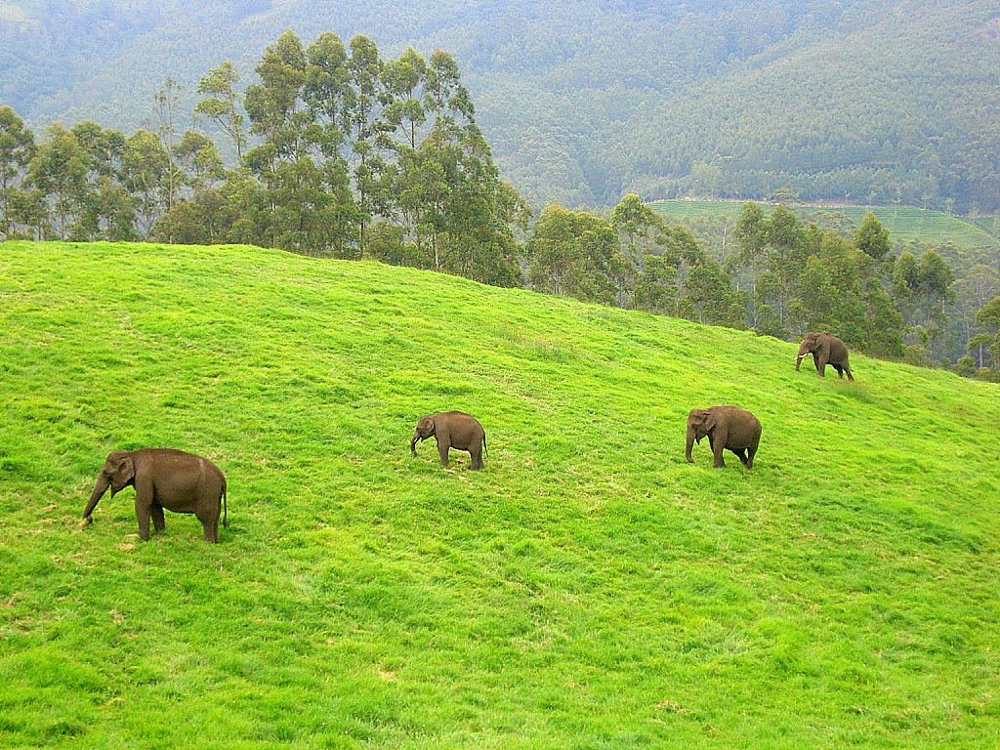

Kerala is one of the smallest states of India. The state stretches along the Malabar coast on the western side of the Indian peninsula, is sandwiched between the hills of the Western Ghats on its eastern edge, the Arabian sea on the western edge and is bordered by the states of Karnataka and Tamil Nadu.
God’s own country is a phrase that was first used in the context of Kerala by Vipin Gopal in 1993. Later, the Kerala state tourism development corporation adopted it as the brand for its tourism promotion campaigns. The National Geographic Magazine has named Kerala as one of the ten paradises of the world.
Trivandrum (now Thiruvananthapuram) is the capital of Kerala. The city is well known for its Kovalam beach, Sri Padmanabhaswamy temple and various museums and palaces. The highland district, Idukki, with mountains, valleys, dams, forests, wildlife, orchids, streams, scenic points, trekking trails, sanctuaries, hill stations and lakes can be called as God’s own hideaway.
Munnar and Wayanad, the famous hill stations, can bring one even closer to nature. The climate is equable and varies little from season to season, with temperatures normally ranging from 80 to 90 F in the plains but dropping to about 70 F in the highlands. It gets both south-west and north-east monsoons; and the rainfall is heavy, averaging about 300 cm annually.
Kerala, a kaleidoscope of mesmeric charms enthralls everyone with the sun, the filtered glades of palm trees, shimmering beaches, dense tropical forests, rocky coasts, still bays and astounding rivers. It has an intricate maze of mossy backwaters, interspersed with rice fields, rich in wildlife and bursting with cashew, coconut, coffee and rubber plantations, and a medley of spices such as cardamom, pepper, turmeric and ginger. Banana is intrinsic to the culture of Kerala; consumed as food and medicine, used in rituals and ceremonies and offered to gods in prayer. Tea plantations flourish in the highlands e.g. Munnar.
In this land of great natural beauty, the country undulates westward from the majestic heights of Western Ghats, presenting a vista of silent valleys clothed in the richest green. The elegant waterfalls at Athirampally, near Trichur, are a popular tourist spot. Along the coast, sand dunes shelter a linked chain of lagoons and backwaters, studded with sea-gulls and country canoes plying at a snails pace. The silence of clear skies is broken only by the coos of koels (a kind of cuckoo) and the frequent flutter of cranes perched on the embankments. The scenic Thekaddy wild-life sanctuary is a popular vacation destination for nature lovers. People also visit Kerala for its well-known ayurvedic massages and traditional ayurvedic treatments.
Kerala has a unique culture. People are of Dravidian racial stock. The local language is Malayalam, but English and Hindi are also commonly spoken. Art forms range from Kalavipayattu, the martial art, to Kathakali which is amongst the oldest dance styles. Onam is the most important festival; it celebrates the mythical king Mahabali’s return to Kerala. At this time then, there is a burst of water carnivals which attracts visitors from everywhere, the most exciting of these are Nehru Trophy Boat Race held on the second Saturday of every August, the Aranmula Race after Onam and the one held during the Great Elephant March in January. Guruvayur, with its temple dedicated to Lord Krishna is a popular pilgrim center.